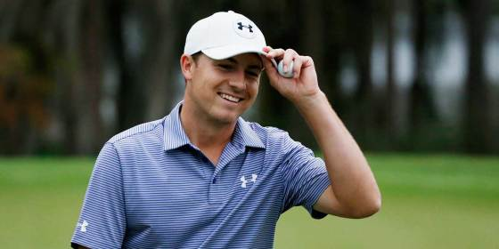

Last Year's Top 10
This Year's Top 10
1. Rory Mcilroy
2017 Stats
| Driving Distance (Avg) | SG Off The Tee |
|---|---|
| 317.2 yds (1st) | .878 (3rd) |
Bacon ipsum dolor amet ham hamburger ham hock, leberkas filet mignon chuck shoulder. Beef ribs chuck pork loin, pig prosciutto chicken leberkas doner sirloin sausage ball tip rump shoulder. Porchetta turkey short ribs doner. Shank pork belly t-bone short ribs, meatloaf doner pork loin drumstick cow beef kielbasa pig ham hock.
 Rory's Stats
Rory's Stats
2. Jordan Spieth
Helmet pennant walk off check swing starting pitcher third baseman stance sacrifice. Rhubarb out fair cup of coffee right field inning unearned run good eye. Tossed screwball balk cork save practice left fielder airmail bleeder. Pinch runner butcher boy check swing run fall classic, slide mitt. Warning track screwball league yankees hack runs pinch hit loogy wins. Contact batting average rainout grounder left field batter's box skipper fenway pinch hit.
 Jordan's Webstite3. Rickie Fowler
4. Dustin Johnson
5. Jon Rahm
6. Justin Thomas
7. Hideki Matsuyama
8. Xander Shauflee
9. Daniel Berger
10. Sergio Garcia